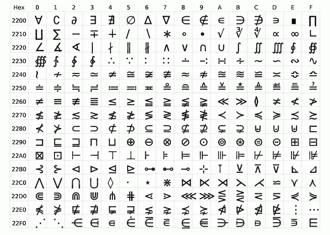

The SHOWFONT procedure displays a TrueType or vector-drawn font (from the file hersh1.chr , located in the resource/fonts subdirectory of the IDL distribution) on the current graphics device.
This routine is written in the IDL language. Its source code can be found in the file showfont.pro in the lib subdirectory of the IDL distribution.
SHOWFONT, Font , Name [, / ENCAPSULATED ] [, / OFFSET ] [, / TT_FONT ]
The index number of the font (may range from 3 to 29) or, if the TT_FONT keyword is set, a string that contains the name of the TrueType font to display.
A string that contains the text of a title to appear at the top of the font display.
Set this keyword, if the current graphics device is “PS”, to make encapsulated PostScript output.
For TrueType fonts, set this keyword to an integer giving the offset at which to start displaying characters. This keyword is ignored for vector fonts. The default is 32 (the "space" character). If OFFSET is set to 32, then the next 224 characters are displayed, otherwise the next 256 characters are displayed.
If this keyword is set, the specified font will be interpreted as a TrueType font.
To create a display of the Helvetica italic TrueType font on the screen:
SHOWFONT, 'Helvetica Italic', 'Helvetica Italic', /TT_FONT
To create a display of Font 3 for PostScript:
; Set output to PostScript:
SET_PLOT, 'PS'
; Specify the output filename. If we didn't specify this, the file
; would be saved as idl.ps by default:
DEVICE, FILENAME='font3.ps'
;Display font 3:
SHOWFONT, 3, 'Simplex Roman'
; Close the new PS file:
DEVICE, /CLOSE
To display the Unicode code page for Mathematical Operators in the DejaVuSans TrueType font:
SHOWFONT, 'DejaVuSans', 'DejaVuSans', /TT_FONT, OFFSET='2200'x
This produces the following display:

|
Pre-4.0 |
Introduced |
| 8.2 | Added OFFSET keyword |